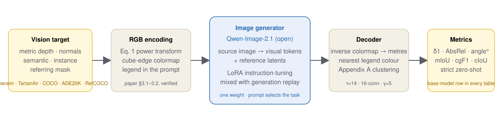

Overview
One interface, five vision tasks
Semantic, instance and referring segmentation, metric depth and surface normals are all emitted as RGB images selected by the prompt and decoded back to structured outputs — the paper's method, implemented one-to-one where the paper is explicit.
Open backbone, open data
Qwen-Image-2.1 / Qwen-Image-Edit as the natively image-conditioned base; Hypersim, TartanAir, ADE20K, COCO/LVIS, RefCOCO and OmniEdit as public substitutes for the paper's in-house data, with a strict zero-shot audit on every manifest.
Measured, not claimed
Every number on this page is rendered from an evaluation JSON that records its inference protocol; the untuned base model is a row in every table; differences below the measured noise floor are reported as "no significant difference".

Method as implemented
Encodings (paper §3.1–3.2, Appendix A)
- Metric depth — power transform
f(d)=1−(1−d/λc)^(λ+1), λ=−3, c=10/3, then a piecewise-linear path along the RGB-cube edges black→red→yellow→green→cyan→blue→magenta→white (Fig. 5, verified against the figure). Inverse: project onto the nearest segment. Training augments with Plasma / Inferno / Viridis / grayscale. - Normals — camera frame +x right, +y up, +z out;
R=(1−x)/2, G=(1+y)/2, B=(1+z)/2. - Semantic — open-vocabulary; the prompt carries the class→colour legend in one of four styles (RGB-tuple JSON, named-colour JSON, natural language, hex); decode = nearest legend colour.
- Instance — prompt gives only the class and background colour; the model picks a colour per instance; decoded with the five-stage Appendix A algorithm (τ=14, 16-connectivity, θsize=2·10⁻⁴, 3×3 erosion with θ=0.1, γ=5.0).
- Referring — Fig. 4 (c)/(d) template, white target on black, kept identical across training, inference and evaluation.
Training recipe (repository choices — the paper states none)
| Backbone | Qwen-Image-2.1 (source image as Qwen3-VL visual tokens + reference latents) |
| Tuning | rsLoRA r32/α64 on attention + MLP, flow matching, AdamW 1e-4, cosine, 30 k steps, 512² canvas |
| Mixture | six tasks; vision_ratio 0.5 (paper: "very low", no number) with OmniEdit edit-pair replay |
| Augmentation | depth colormaps, four semantic prompt styles with 50 % legend re-colouring, aspect-preserving crops |
| Zero-shot | --protocol strict: path patterns + COCO image-id exclusion (RefCOCOg val/test live inside COCO train2014); Cityscapes train rejected |
| Inference | 50 steps, CFG 4.0, seed 42, native-resolution scoring — pinned and written into every result JSON |
Capabilities
Hover (or tap) a tile to reveal the generated output. Tiles are populated from data/gallery.json by experiment E5; until then they show placeholders. Every tile records its checkpoint, prompt and seed.
Results
Bars and tables are rendered from data/results.json, which is generated from the evaluation JSONs (scripts/render_results_tables.py). Each table states its inference protocol; "base" is the untuned backbone with identical prompts and decoders; "paper" columns are the original paper's numbers for context only — a different, closed base model.
Reproduce
# data: download -> prepare -> merge -> strict zero-shot audit -> gates (CPU node)
bash scripts/run_e1_full.sh --to merge
# train 30k steps with auto-resume, then evaluate 5k/15k/30k with the pinned protocol (GPU node)
RUN_DIR=output/e1 nohup bash scripts/run_e1_full.sh --from train > output/e1.log 2>&1 &
# machine-checked gates at every stage
python scripts/check_experiment_gates.py data|run|eval ...Full plan with research questions, per-experiment done-criteria and the report outline: EXPERIMENT_TODO.md · exp_setting.md · docs/DATASETS.md.
Paper alignment audit
Every checkable statement in the paper (formulas, constants, prompt strings, Appendix A, evaluation protocols, data rules) was mapped to its implementation — full table.
The paper contains no training section (optimizer, lr, steps, resolution, tuning method, inference steps, CFG); these are recorded repository choices and cannot be scored for agreement.
Honest boundaries
- The paper's absolute numbers are not a target: Nano Banana Pro is closed and our backbone is different.
- Generation preservation is measured with a FID / LPIPS / CLIP proxy against the base model; the paper used a human pairwise study.
- SA-Co/Gold and ReasonSeg protocol numbers need Gemini (presence filter / query rewrite); without it only diagnostic values are reported.
- Training data are public human annotations (COCO, LVIS, ADE20K, RefCOCO) and public renders (Hypersim, TartanAir) — not the paper's in-house web annotations.
- Licences: Hypersim is research-only and propagates to released checkpoints; see the model card.
Citation
Please cite the original paper; cite this repository for the implementation and the reproduction study.
@article{visionbanana2026,
title = {Image Generators are Generalist Vision Learners},
author = {Gabeur, Valentin and Long, Shangbang and Peng, Songyou and others},
journal = {arXiv preprint arXiv:2604.20329},
year = {2026}
}
@misc{openvisionbanana2026,
title = {Open-Vision-Banana: an open reproduction study of Vision Banana on public backbones and public data},
author = {{Open-Vision-Banana contributors}},
year = {2026},
howpublished = {\url{https://github.com/isLinXu/open-vision-banana}}
}